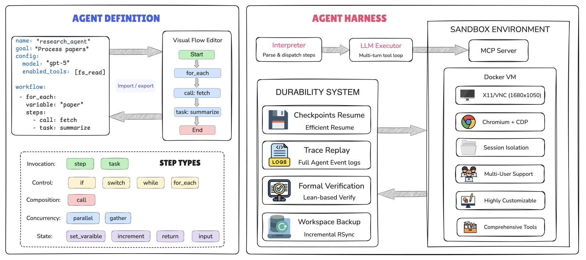
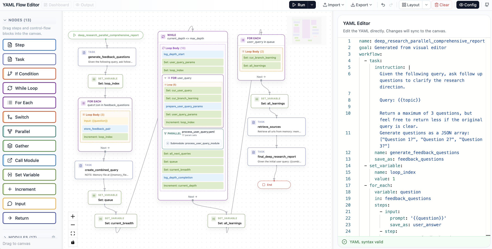
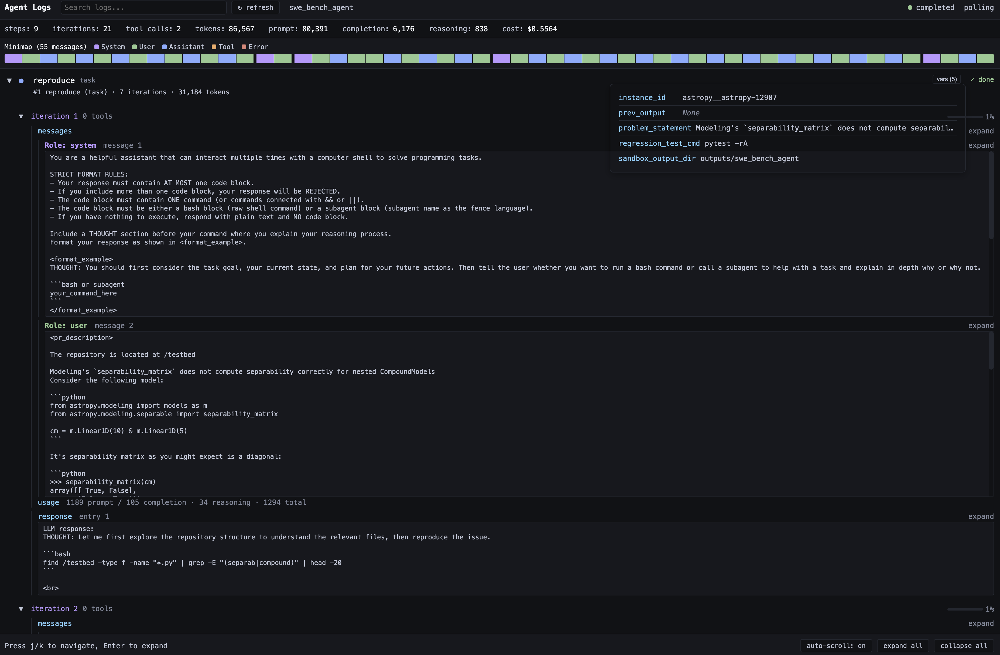
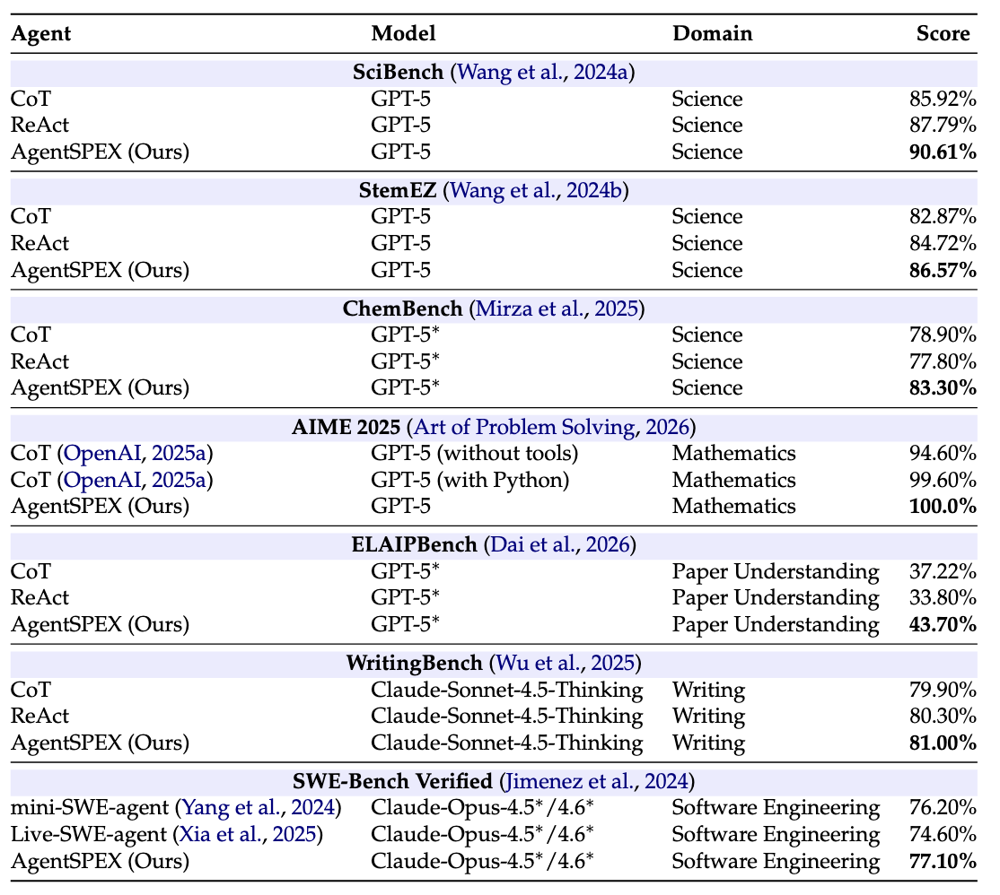
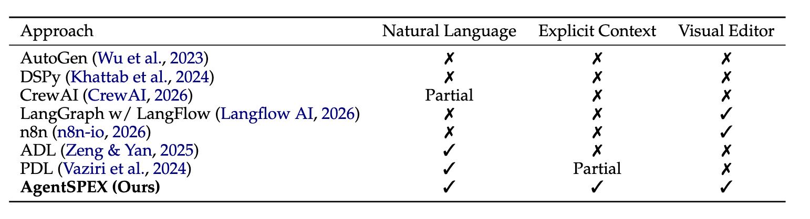

AgentSPEX: An Agent SPecification and EXecution Language
Our free hosted demo period has ended. You can still run AgentSPEX locally.
Abstract
Language-model agent systems commonly rely on reactive prompting, in which a single instruction guides the model through an open-ended sequence of reasoning and tool-use steps, leaving control flow and intermediate state implicit and making agent behavior potentially difficult to control. Orchestration frameworks such as LangGraph, DSPy, and CrewAI impose greater structure through explicit workflow definitions, but tightly couple workflow logic with Python, making agents difficult to maintain and modify. In this paper, we introduce AgentSPEX, an Agent SPecification and EXecution Language for specifying LLM-agent workflows with explicit control flow and modular structure, along with a customizable agent harness. AgentSPEX supports typed steps, branching and loops, parallel execution, reusable submodules, and explicit state management, and these workflows execute within an agent harness that provides tool access, a sandboxed virtual environment, and support for checkpointing, verification, and logging. Furthermore, we provide a visual editor with synchronized graph and workflow views for authoring and inspection. We include ready-to-use agents for deep research and scientific research, and we evaluate AgentSPEX on 7 benchmarks. Finally, we show through a user study that AgentSPEX provides a more interpretable and accessible workflow-authoring paradigm than a popular existing agent framework.

An overview of the AgentSPEX Architecture.

Visual editor interface.

Dashboard interface.
YAML Flow Editor Demo
Demo Videos
Evaluation Results and Feature Comparison

Evaluation Results
Evaluation results on seven different benchmarks. SWE-Bench Verified results are reported as the average performance of Claude-Opus-4.5 and Claude-Opus-4.6. *Denotes use of high-reasoning effort.

Comparison
Comparison of agent building frameworks.
- Natural Language: supports specifying workflow logic directly in natural language.
- Explicit Context: supports explicit, user-controlled context injection through variables or structured inputs.
- Visual Editor: provides a graphical interface for composing or editing workflows.
Generated Results
BibTeX
@misc{wang2026agentspexagentspecificationexecution,
title={AgentSPEX: An Agent SPecification and EXecution Language},
author={Pengcheng Wang and Jerry Huang and Jiarui Yao and Rui Pan and Peizhi Niu and Yaowenqi Liu and Ruida Wang and Renhao Lu and Yuwei Guo and Tong Zhang},
year={2026},
eprint={2604.13346},
archivePrefix={arXiv},
primaryClass={cs.CL},
url={https://arxiv.org/abs/2604.13346},
}